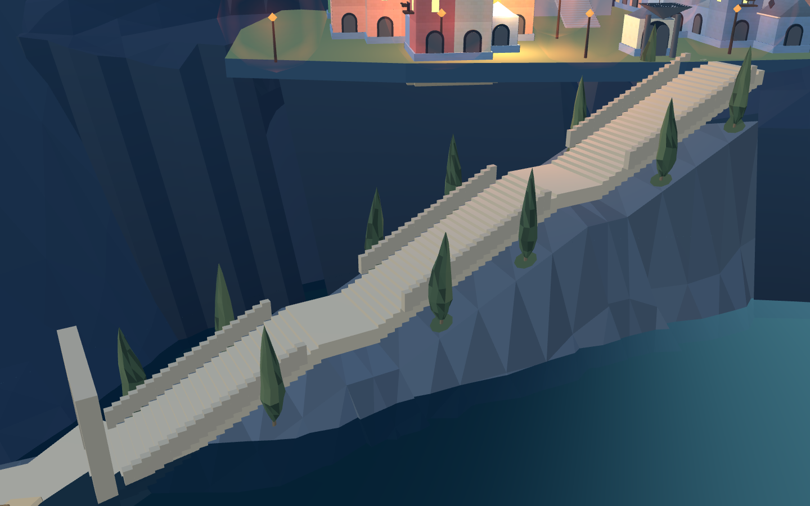
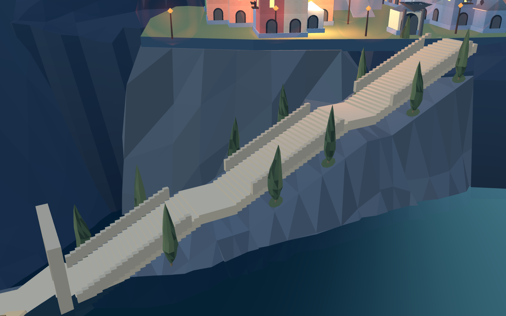
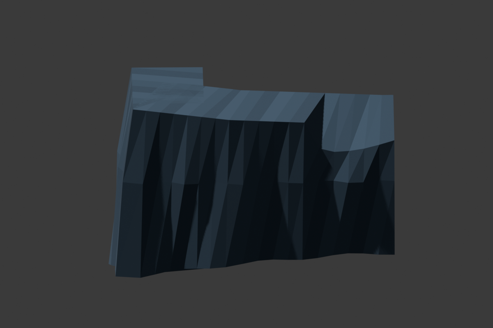
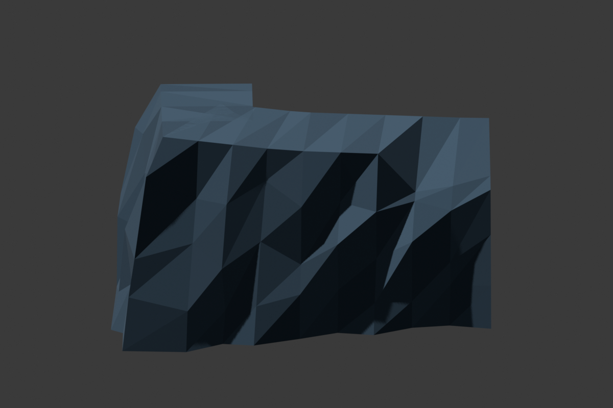
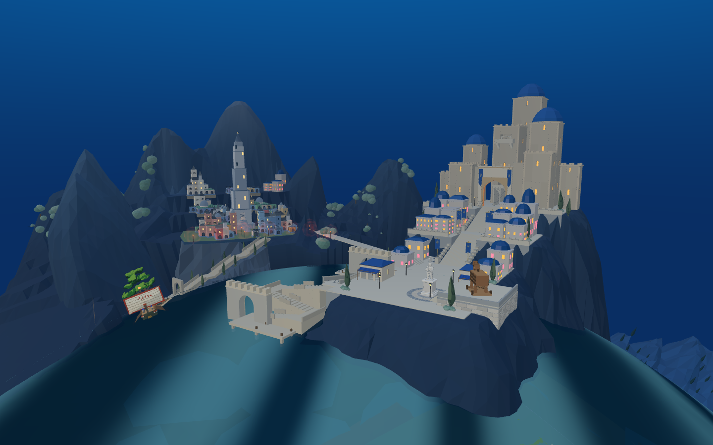
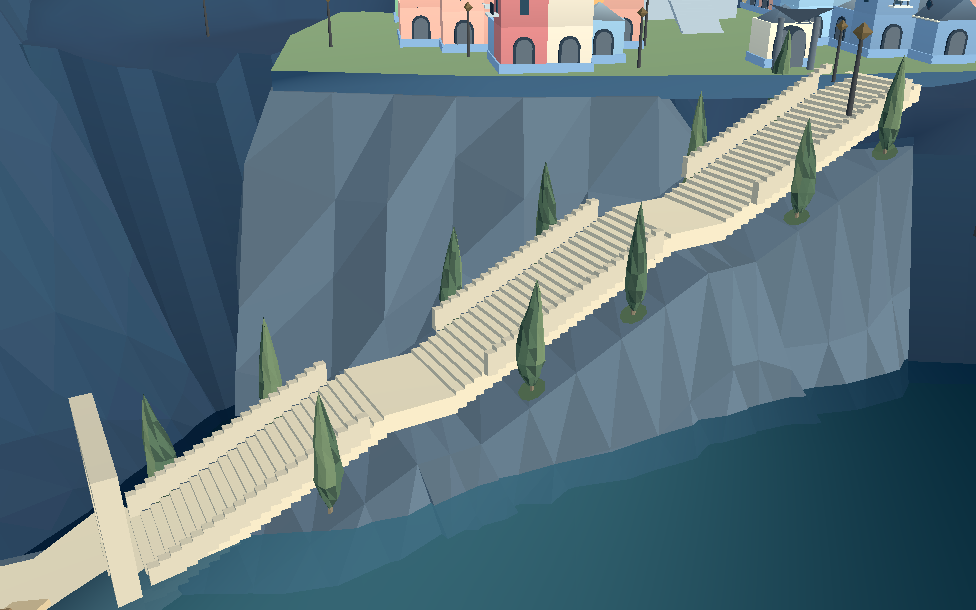
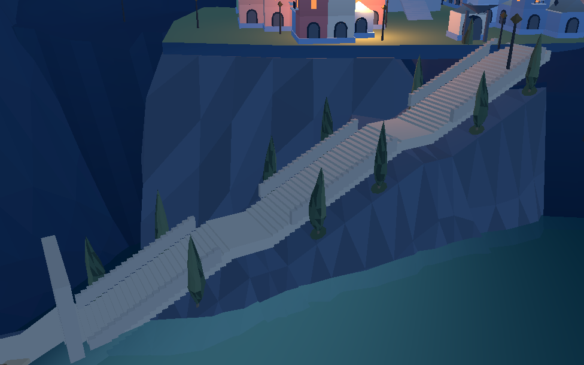

当前已合入默认 8931 入口：查看合入结果
最新：两层滨水建筑及侧向入口已接入
老城临海底座：从悬空边缘接回岩体
保留原建筑与楼梯。Blender 两轮迭代，当前新增一个网格、192 个三角形。18 个非通路边缘测点已接住基础；5 个楼梯邻近点保留净空。
进入 8931 原游戏候选 · 工程记录
Web 与 Godot 候选已接入：楼梯 1,473 个采样点通过，Godot 原装备短剑兵走完 90 段。整体目标尚未完成，默认入口布局尚未切换。
同机位游戏近景

修改前：薄底座下方存在缺口。
R02：岩体接住底座，并保留沿坡上城楼梯。两次迭代
R01：接上了，但竖直条状岩面仍显机械。R02：打散岩层高度与坡脚宽度。
Blender 实物渲染

第一轮闭合支撑体。
第二轮岩坡分面。全景与认可目标

当前真实游戏。仍有大片裸岩、滨水建筑与目标的差距。 认可目标：下一步继续分层滨水建筑、岸门与植被。
认可目标：下一步继续分层滨水建筑、岸门与植被。同工程 Godot

白天实景。
夜间实景。